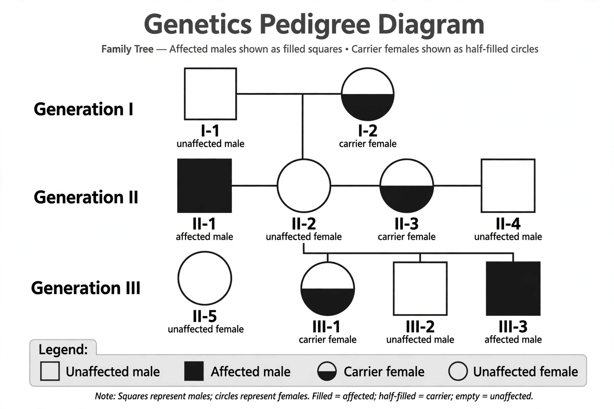

From Wikipedia, the free encyclopedia
X-linked recessive inheritance is a mode of inheritance in which a mutation in a gene on the X chromosome causes the phenotype to be always expressed in males (who are homozygous for that gene) and in females only if they are homozygous for the gene mutation. The gene is recessive in females, who have two X chromosomes and can be carriers.

Because males have only one X chromosome, a single recessive gene on it is sufficient to cause the condition. Females need two copies of the mutant gene to be affected, so they are more often unaffected carriers. Affected males pass the gene to all their daughters (who become carriers) but never to their sons, who inherit their father's Y chromosome instead. Carrier mothers have a 50% chance of passing the mutation to each son, who would be affected.
Well-known X-linked recessive conditions include:
See also: Sex linkage, X-linked dominant inheritance.